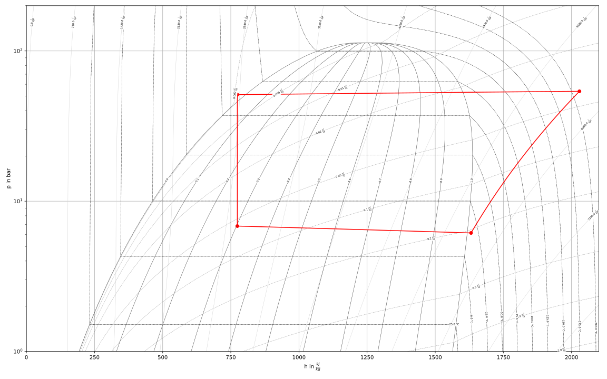
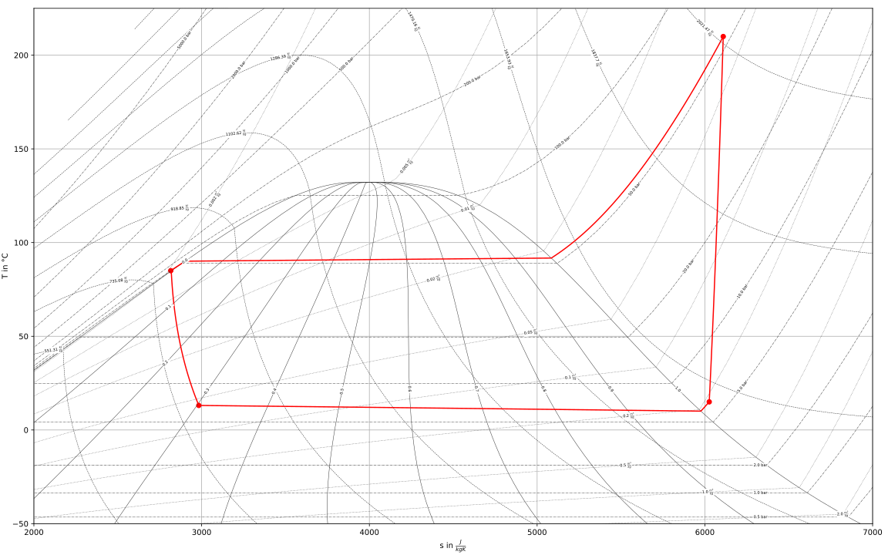

v0.4.0 - Gibbs’ Gallery (January, 27, 2021)#
API Changes#
In order to stick closer to the PEP 8 style guide we changed the names of all classes in TESPy to
CamelCaseinstead ofsnake_caseas the latter is reserved for methods. This means, you need to change your import like in the following examples:from tespy.components import Turbine, CombustionEngine from tespy.components import HeatExchanger, HeatExchangerSimple from tespy.connections import Connection from tespy.connections import Bus from tespy.connections import Ref from tespy.networks import Network from tespy.tools.characteristics import CharLine # but keep e.g. from tespy.networks import load_network
The examples in the online documentation and the examples repository have been adjusted accordingly (PR #237).
The definition of power and heat transfer of the components
tespy.components.combustion.engine.CombustionEngineandtespy.components.customs.orc_evaporator.ORCEvaporatoras well as the heat loss values of the componentstespy.components.heat_exchangers.solar_collector.SolarCollectorandtespy.components.heat_exchangers.parabolic_trough.ParabolicTroughhave been changed to negative sign as all values are energy output streams (PR #215) and (PR #243).Specification of characteristics has changed. Use a dictionary instead of DataContainer specification if you want to update more than just the characteristic function. E.g. if you have the measurement data for the isentropic efficiency of a turbine like below. X-data are ratio of actual mass flow to design mass flow and y values are the ratio of actual isentropic efficiency to design value of the turbine. Say, you want to specify these data as
tespy.tools.characteristics.CharLineand the characteristics should be applied. In order to do that, pass a dictionary that contains theCharLineobject as'char_func'and setis_settoTrue:from tespy.components import Turbine from tespy.tools.characteristics import CharLine import numpy as np t = Turbine('myturbine') # ... design specs # ... design calculation # offdesign case, use char line line = CharLine( x=[0.1, 0.3, 0.5, 0.7, 0.9, 1, 1.1], y=np.array([0.6, 0.65, 0.75, 0.82, 0.85, 0.855, 0.79]) / 0.855) t.set_attr(eta_s_char={'char_func': line, 'is_set': True})
More information on characteristics specification and a fully working example can be found in the corresponding section in the online documentation (PR #243).
Characteristic Maps behave differently: Instead of two output dimensions
z1andz2they do now only hold one output dimensionz. The calculation of z as function of x and y does not change (PR #243).The
char_mapparameter of the componenttespy.components.turbomachinery.compressor.Compressorhas been split up into two separate parameters:char_map_eta_s: Map linking non-dimensional mass flow and speed line to isentropic efficiency.char_map_pr: Map linking non-dimensional mass flow and speed line to pressure ratio.
(PR #243).
Remove class Node (PR #243).
For reference specification, the
deltaparameter must be specified in the corresponding network unit, e.g. if your pressure unit is set tobar, thedeltawill be interpreted in bar, too (PR #243).
New Features#
Automatic TESPy model documentation: You can generate an automatic model report in LaTeX format after a simulation. The document will contain all input parameters specified as well as all equations and characteristics applied in your previous simulation. Import and function call are implemented as follows. This feature will be under future development, driven by user requirements. If you have any feedback or suggestions or want to add new data you are very welcome to submit an issue in the GitHub repository or even open a pull request. The documentation code is located in the
tespy.tools.document_modelsmodule.from tespy.tools import document_model document_model(mynetwork)
For further information also check the corresponding section in the online documentation (PR #243).
IF97 back end for properties of water is now supported. A fix was implemented in TESPy to solve convergence issues near saturation in region 1. You can use the back end by adding
'IF97::water'to your network’s fluid list (PR #238, also see CoolProp Issue #1918).An automatic exergy analysis has been added. The method reliably works for temperature values that are larger than the ambient temperature. An implementation for temperature values crossing or below the ambient temperature is in the making. Also, combustion processes are not covered for now (PR #215). If you like to contribute, you are welcome to submit an issue in the GitHub repository.
Add a method
get_plotting_datato each component to export the input data required by FluProDia in order to generate the data required to display state changes in the components in a fluid property diagram. Each component returns a nested dictionary containing the respective data. E.g. the return value of avalve:{1: { 'isoline_property': 'h', 'isoline_value': 773.8970004397456, 'isoline_value_end': 773.8970004397456, 'starting_point_property': 'p', 'starting_point_value': 51.164150405253665, 'ending_point_property': 'p', 'ending_point_value': 6.831002318100345 }}
The diagrams could look like this:
Figure: logph diagram of NH3 with a simple heat pump cycle.#
Figure: Ts diagram of NH3 with a simple heat pump cycle.#
For more information see the respective documentation section (PR #234).
Add a flag to deactivate calculation of all component equations in every iteration. This improves stability in some cases but may reduce calculation speed (PR #226). To deactivate simply specify on calling the
tespy.networks.network.Network.solve()method:mynetwork.solve('design', always_all_equations=False)
Add a flag use cuda instead of numpy for matrix inversion. With cuda matrix inversion is outsourced to the graphics card. Using cuda additionally requires
cupyinstalled on your machine (PR #226). To activate simply specify on calling thetespy.networks.network.Network.solve()method:mynetwork.solve('design', use_cuda=True)
For more information on
cupyvisit the online documentation.Note
In general, calculation time depends on many factors of your local machine. You should try and check, if using cuda or disabling always all equations benefits your calculation times individually.
Bug Fixes#
Other Changes#
component |
parameter |
new value |
|---|---|---|
heat_exchanger_simple |
|
1e15 |
|
200 |
|
valve |
|
1e15 |
On some machines the coloring of the results printout does not work and displaces the table in an ugly way. To avoid this, the coloring is changed to optional (PR #229). Use the following line for non-colored printouts:
mynetwork.print_results(colored=False)
An error message is raised in case the user specifies a fluid vector containing fluids, that are not part of the network’s fluid list (PR #233).
An understandable error message is raised in case the user misses out on fluids required by components of class CombustionChamber or CombustionEngine (#7adff43a).
For improved convergence stability of the methods
tespy.components.heat_exchangers.simple.HeatExchangerSimple.kA_group_func()andtespy.components.heat_exchangers.simple.HeatExchangerSimple.kA_char_group_func(), the logarithmic temperature difference is calculated based on the mean temperature difference between ambient and inlet and outlet temperature, if the terminal temperature differences do not have the same sign (PR #225).Changes in the equation management of components for much easier maintenance and future development (PR #243).
Contributors#
Francesco Witte (@fwitte)
Markus Brandt (@MarBrandt)